Premessa alla Scansione Iniziale con Nessus
Dott. Castelli, benvenuto nella prima fase operativa del nostro progetto di hardening per Metasploitable 2! Data la recente instabilità segnalata dalla comunità di Parrot OS riguardo l'installazione di OpenVAS/GVM, abbiamo optato per una soluzione altrettanto potente e rinomata nel settore: **Nessus Essentials** di Tenable. Questo ci garantirà affidabilità e risultati dettagliati per la nostra analisi.
L'ambiente di test, che vede Parrot OS come nostra piattaforma di analisi e Metasploitable 2 su VirtualBox come "paziente", è stato configurato per operare in una rete Host-Only isolata, garantendo che le nostre attività di scansione non abbiano impatti esterni e si svolgano in un contesto controllato.
In questa sezione, documenterò l'installazione e la configurazione di Nessus Essentials su Parrot OS, la creazione del target di scansione e l'avvio della policy "Basic Network Scan". L'obiettivo è raccogliere dati grezzi ma fondamentali: quali porte sono aperte, quali servizi sono in ascolto e, soprattutto, quali vulnerabilità note affliggono queste configurazioni. I risultati che emergeranno costituiranno la nostra "mappa dei rischi" per pianificare gli interventi di remediation nella fase successiva.
Pronti a vedere cosa ci rivelerà Nessus?
1. Configurazione Ambiente e Strumenti (Nessus Essentials)
1.1 Ambiente di Laboratorio Virtuale
Per questo esercizio, è stato allestito un ambiente virtuale controllato utilizzando:
- Macchina Attaccante/Scanner: Parrot OS (versione 6.3), in esecuzione come macchina virtuale su Oracle VirtualBox. IP: 192.168.56.1.
- Macchina Target: Metasploitable 2, importata come macchina virtuale su Oracle VirtualBox. IP: 192.168.56.1.
- Rete Virtuale: Entrambe le VM sono state configurate per utilizzare una rete "Host-Only Adapter" (`vboxnet0`) di VirtualBox, garantendo connettività reciproca sulla subnet [Es. 192.168.56.0/24] e isolamento dalla rete esterna.
1.2 Installazione e Configurazione di Nessus Essentials
Su Parrot OS, è stato installato e configurato Nessus Essentials. I passaggi chiave sono stati:
- Download Nessus: Scaricato il pacchetto `.deb` di Nessus Essentials per Debian/Ubuntu (architettura amd64) dal sito ufficiale Tenable, previa registrazione per ottenere un codice di attivazione.
- Installazione: Installato il pacchetto tramite `sudo dpkg -i
- Avvio Servizio: Avviato il servizio Nessus con `sudo /bin/systemctl start nessusd.service`.
- Configurazione Web Iniziale: Accesso a `https://localhost:8834` tramite browser.
- Selezione di "Nessus Essentials".
- Inserimento del codice di attivazione ricevuto via email.
- Creazione di un account amministratore per Nessus (username e password).
- Attesa del download e compilazione dei plugin (processo che richiede tempo).
- Creazione della Scansione:
- Dalla dashboard di Nessus, clic su "New Scan".
- Selezione del template "Basic Network Scan".
- Settings: Nome: `SCAN_INIZIALE_Metasploitable2_M3`, Targets: 192.168.56.1.
- Discovery: Port scan su "All ports".
- Salvataggio e avvio ("Launch") della scansione.
2. Risultati della Scansione Iniziale con Nessus
La scansione "Basic Network Scan" è stata completata in 20 minuti. Di seguito, il riepilogo grafico delle vulnerabilità rilevate e una tabella con i dettagli delle principali criticità (Critical/High) identificate da Nessus.
2.1 Riepilogo Grafico (Dashboard Nessus)
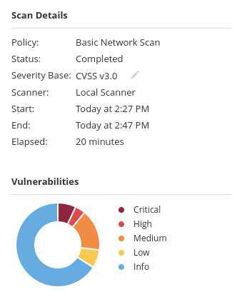 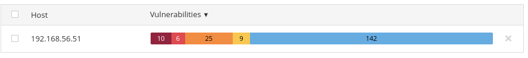 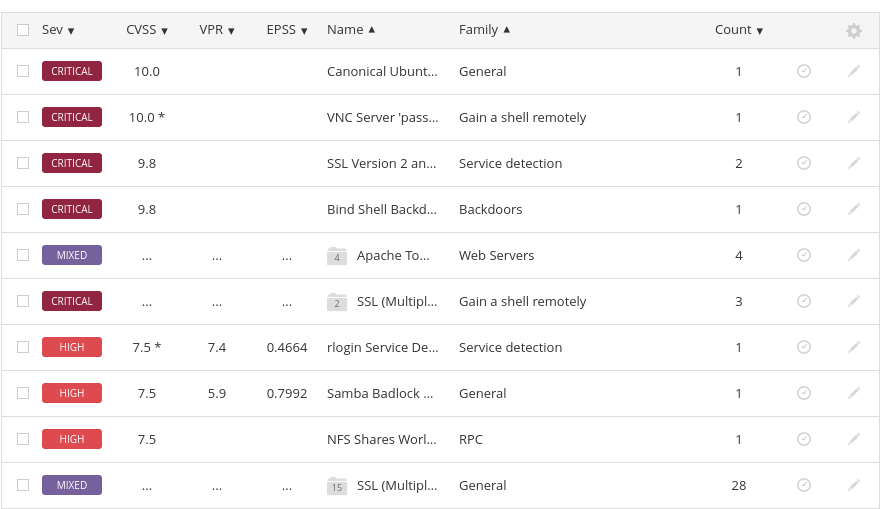
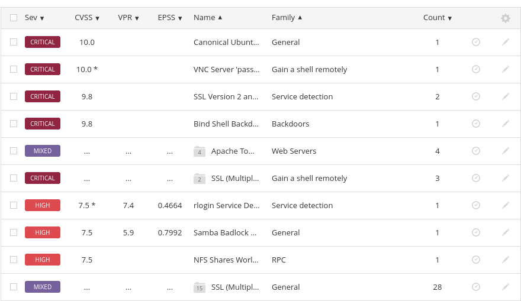
2.2 Dettaglio Vulnerabilità Critical/High Rilevanti
Dalla scansione sono emerse 10 vulnerabilità "Critical" e 6 vulnerabilità "High". Di seguito, una selezione delle più significative, alcune di queste saranno oggetto della successiva fase di remediation:
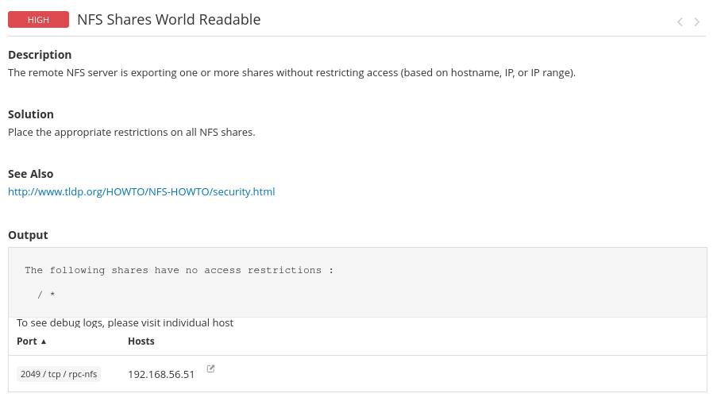 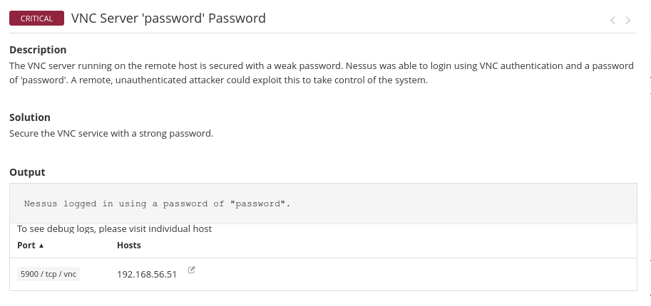 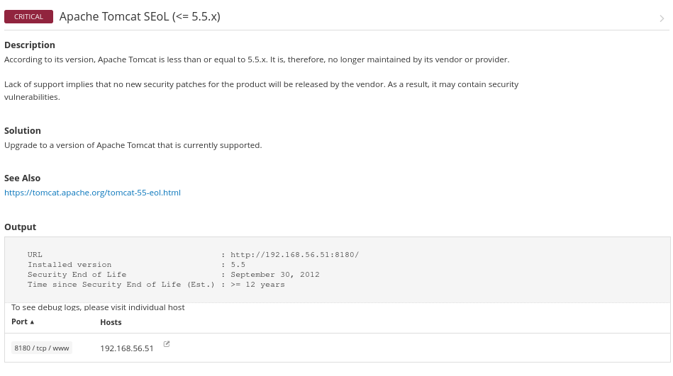 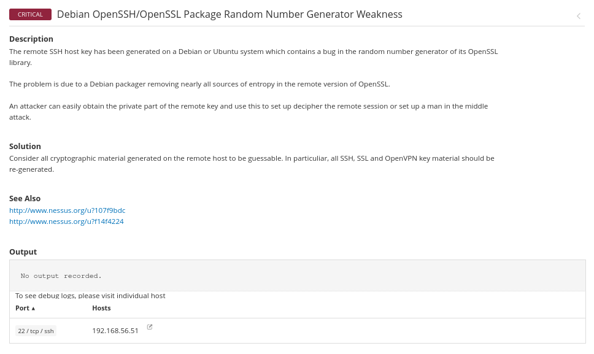 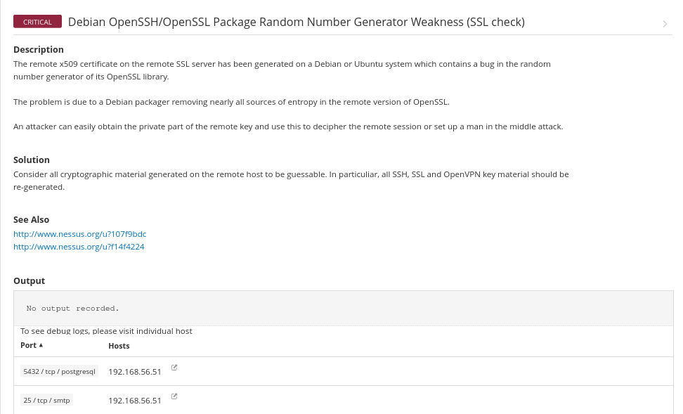 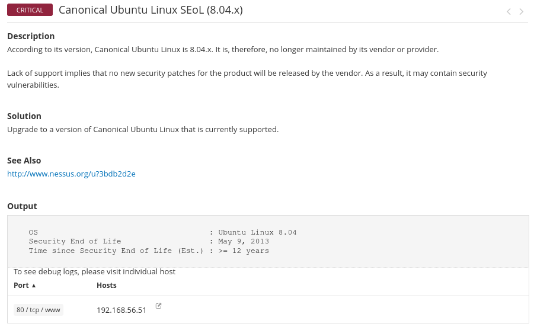 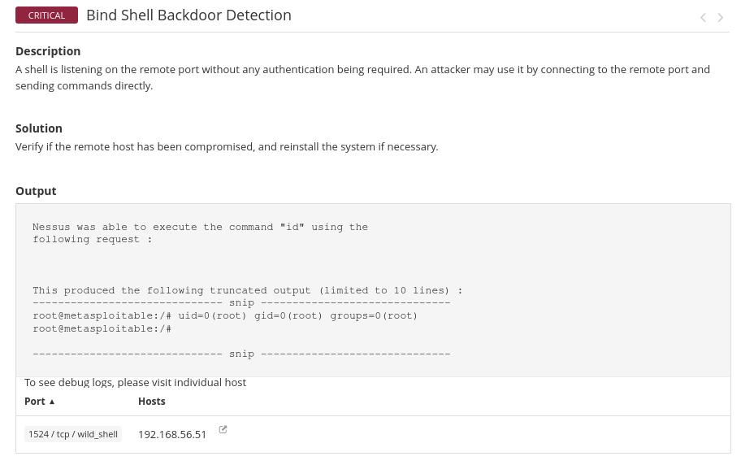Conclusioni della Scansione Iniziale (Nessus)
Dott. Castelli, l'analisi dei risultati della scansione effettuata con Nessus Essentials sulla macchina Metasploitable 2 ha confermato, come previsto, una significativa esposizione a rischi di sicurezza.
Questa situazione indica una superficie d'attacco estremamente ampia. La presenza di servizi obsoleti, configurazioni di default insicure (come password deboli), sistemi operativi non più supportati e backdoors note, espone la macchina a un rischio di compromissione completo. Le vulnerabilità identificate da Nessus, in particolare quelle "Critical" e "High", richiedono un intervento prioritario.
Sulla base di questa approfondita analisi iniziale, la fase successiva del progetto si focalizzerà sull'implementazione di azioni di rimedio mirate. Verranno selezionate le quattro vulnerabilità principali sopra dettagliate (NFS, rexecd, VNC e Bind Shell, o i loro equivalenti identificati da Nessus) per l'applicazione di specifiche contromisure tecniche, con l'obiettivo di ridurre significativamente il livello di rischio e migliorare la postura di sicurezza complessiva del sistema target.